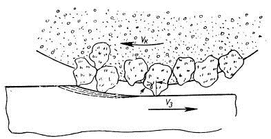

Шлифование
Шлифование—процесс массового скоростного микрорезания (царапания) поверхностных слоев твердых
тел большим числом мельчайших шлифующих зерен, сцементированных в инструмент с помощью связки;
процесс протекает на высоких скоростях: наиболее часто до 50 м/с и в отдельных случаях до 100
м/с. Процесс шлифования используют для придания изделиям высокой точности, а также для
предварительной обработки заготовок — очистки отливок, поковок и др.

Шлифование как метод чистовом обработки материалов обеспечивает:
-
Высокую производительность, определяемую размером поверхности детали, обработанной в единицу
времени, что достигается как высокими скоростями и большими обрабатываемыми поверхностями,
так и предельным сокращением времени, необходимого для установки и снятия детали.
- Высокую размерную точность сопряжения деталей в пределах до 2—3 мкм и меньше;
-
Высокую геометрическую точность формы деталей (нецилиндричность деталей в пределах 2—3 мкм,
некруглость — 0,4—0,5 мкм и меньше);
-
Высокий класс чистоты обработанной поверхности — 7—8-й, а при соблюдении определенных
условий — 9—10-й и выше;
-
Высокое качество поверхностного слоя и минимальное напряженное состояние материала
обработанной детали;
-
Возможность обработки высокотвердых материалов (закаленных сталей, твердых сплавов,
мннералокерамических композиций и т. д.) в результате предельно высокой твердости и
термоустойчивости шлифующих зерен инструмента.
Высокое качество деталей, обработанных шлифованием, является результатом снятия с детали
огромного числа тончайших стружек и малыми силами, развивающимися в процессе обработки.
Между отдельными процессами резания металлов принципиальной разницы не имеется, так как
процесс стружкообразования на режущих элементах различных инструментов протекает по одинаковой
схеме независимо от конструктивного оформления инструмента. Во всех случаях резание является
последовательным сдвигом (или скалыванием) отдельных элементов — стружек с помощью клина, к
которому приложена определенная сила резания. Сказанное в известной мере относится и к
процессу шлифования металлов.
Однако процесс шлифования имеет следующие особенности, существенно отличающие его от процесса
резания металлическим инструментом:
-
Беспорядочное расположение огромного количества мельчайших зерен на рабочей поверхности
шлифовального круга;
- Прерывистая режущая кромка у шлифовального круга;
- Разновысотность шлифующих зерен у круга;
-
Определенная зависимость между толщиной и шириной среза, снимаемого шлифующими зернами;
-
Разнообразная (неправильная) геометрическая форма шлифующих зерен и наличие у них
округленных (сферических) вершин обеспечивающих, как правило, отрицательные передние углы
резания (царапания) отдельными зернами;
-
Особые свойства режущих элементов — шлифующих зерен — высокая твердость, термоустойчивость,
острота, хрупкость, способность разрушаться по плоскостям спайности и др.;
-
Высокие окружные скорости мнкрорезания и малые глубины резания (царапания) каждым шлифующим
зерном, обеспечивающие мгновенное снятие огромного количества стружек в единицу времени и
интенсивное скольжение зерен о материал в момент, предшествующий их врезанию и началу
микрорезания;
-
Динамическое воздействие каждого шлифующего зерна на обрабатываемый поверхностный слой,
способствующее повышению мгновенной температуры микрорезания.
Высокое качество деталей, обработанных шлифованием, является результатом снятия с детали
огромного числа тончайших стружек и малыми силами, развивающимися в процессе обработки.